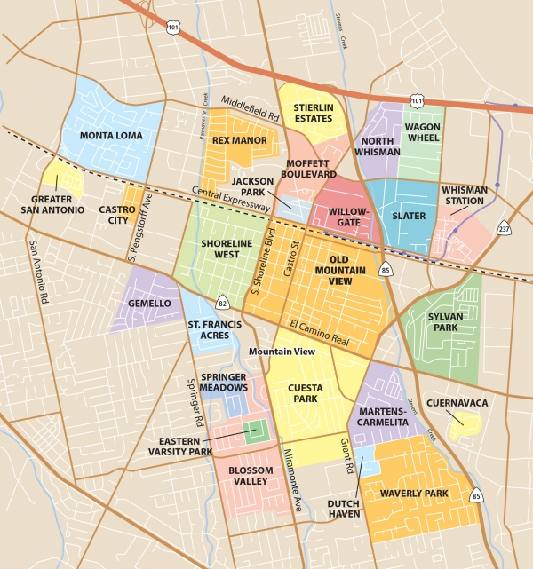

<section>
    <div class="row">
      <div class="large-12 columns">
	  <h1>Neighborhoods and Community Groups</h1>
        <figure>
          
          <figcaption>Neighborhoods Map from the <a href="https://www.paloaltoonline.com/news/2010/02/02/mountain-view-neighborhoods" target="_blank">Mountain View Voice</a></figcaption>
        </figure><br>
        <p>Mountain View is home to many vibrant neighborhoods and active community groups. This page includes links to resources for neighborhood associations and websites for neighborhoods and organizations that may be of interest to residents.</p>

        <h1>Neighborhood Resources</h1>

        <p><a href="https://www.mountainview.gov/council/council_subcommittees/neighborhoods_committee.asp" target="_blank">Council Neighborhoods Committee</a> <br>The City of Mountain View Council Neighborhoods Committee (CNC) was established to oversee programs and activities intended to improve and enhance the City’s neighborhoods. The CNC hosts three to four town hall style meetings each year, rotating through each of the neighborhood areas. Additionally, the CNC administers the Neighborhood Grant Program, which provides funding for block parties, potlucks, and other community-building activities.</p>

        <p><a href="https://visitor.r20.constantcontact.com/d.jsp?llr=qaujz4yab&p=oi&m=1126348148752&sit=868hofblb&f=3c25d18c-9d20-4e75-ae6a-1c8a4793388c" target="_blank">Sign up for email updates here</a> to receive information about the Neighborhood Grant Program when the grant cycle opens as well as invitations to the Neighborhood Networking Event and pertinent CNC meetings. </p>

        <p>Here are resources to help you find out which neighborhood you live in, as well as contact information for neighborhood association leaders: <br><a href="https://www.mountainview.gov/documents/Neighborhood%20Grants%20Group%20Map.pdf" target="_blank">Neighborhood Association Map</a> <br><a href="https://www.mountainview.gov/civicax/filebank/blobdload.aspx?BlobID=31769" target="_blank">Neighborhood Associations and Groups</a></p>

        <p>Learn more about City of Mountain View <a href="https://www.mountainview.gov/depts/comdev/preservation/programs/default.asp" target="_blank">Neighborhood Programs here</a>.</p>

        <p>Join a Community Emergency Response Team (CERT) by signing up for free training through the City’s Office of Emergency Services. CERT team training prepares local residents to help themselves, their families and neighbors in the event of a disaster. The training covers basic skills that are important to know in a disaster when emergency services may not be available. CERT members receive training in earthquake awareness, disaster fire suppression techniques, disaster medical operations, and light search and rescue, as well as team organization and management. Trained emergency personnel, including firefighters and emergency medical services personnel, teach all classes.</p>

	      <p><a href="https://www.mountainview.gov/depts/fire/preparedness/cert.asp" target="_blank">Learn more about CERT here</a></p>
		  <p>Many neighborhoods have websites. If your neighborhood’s website isn’t listed here, please email me at <a href="mailto:lucas@ramirezforcouncil.com">lucas@ramirezforcouncil.com</a> or <a href="https://github.com/RamirezforCouncil/RamirezforCouncil.github.io" target="_blank">submit a pull request or issue through GitHub</a>, and it will be added to the list.</p>
		  <ul>
		  <li><a href="https://www.montaloma.org" target="_blank">Monta Loma</a></li>
		  <li><a href="https://www.omvna.org" target="_blank">Old Mountain View</a></li>
		  <li><a href="http://www.greater-san-antonio.org" target="_blank">Greater San Antonio Community</a></li>
		  <li><a href="https://www.shorelinewestmv.com" target="_blank">Shoreline West </a></li>
		  </ul>
		  <h1>Community Groups</h1>
		  <p>Mountain View has a long and robust history of civic participation and community building. Here are some of the organizations and groups that are active in Mountain View:</p>
		  <ul>
		  <li><a href="https://www.lwvlamv.org" target="_blank">League of Women Voters Los Altos - Mountain View</a> </li>
		  <li><a href="https://mountainviewhistorical.org" target="_blank">Mountain View Historical Association</a> </li>
		  <li><a href="http://challengeteam.org/" target="_blank">Mountain View Challenge Team</a></li>
		  <li><a href="https://www.mountainview.gov/depts/manager/multilingual/spanish_language_civic_leadership_academy.asp" target="_blank">Spanish Leadership Academy</a> </li>
		  <li><a href="http://www.lmv.education" target="_blank">Leadership Mountain View</a> </li>
		  <li><a href="http://www.mvcsp.org" target="_blank">Mountain View Coalition for Sustainable Planning</a> </li>
		  <li><a href="http://www.carbonfreemountainview.org" target="_blank">Carbon Free Mountain View</a> </li>
		  <li><a href="https://www.facebook.com/groups/164696707425124" target="_blank">Cafecito</a> </li>
		  <li><a href="https://mvyimby.com" target="_blank">Mountain View YIMBY</a> </li>
		  </ul>
      </div>
    </div>
</section>
